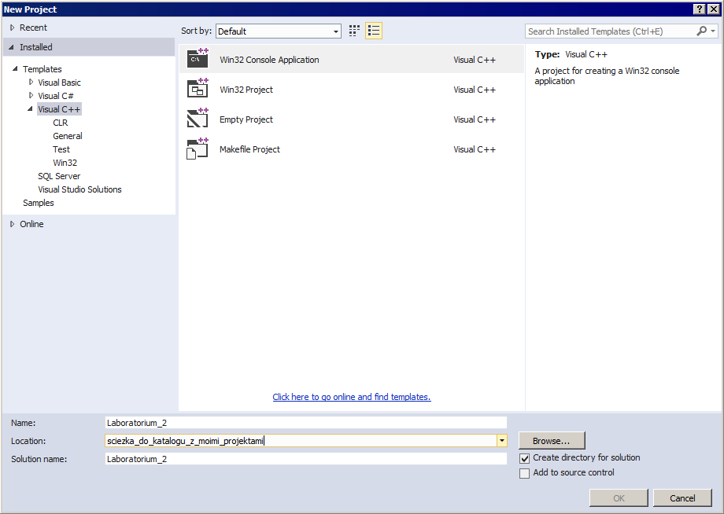
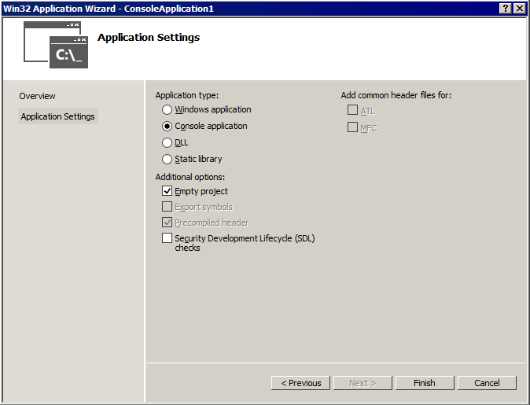
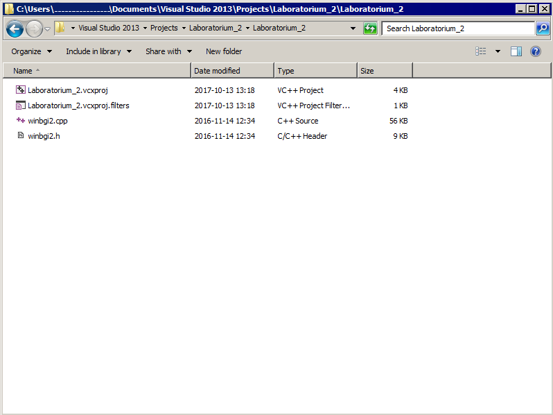
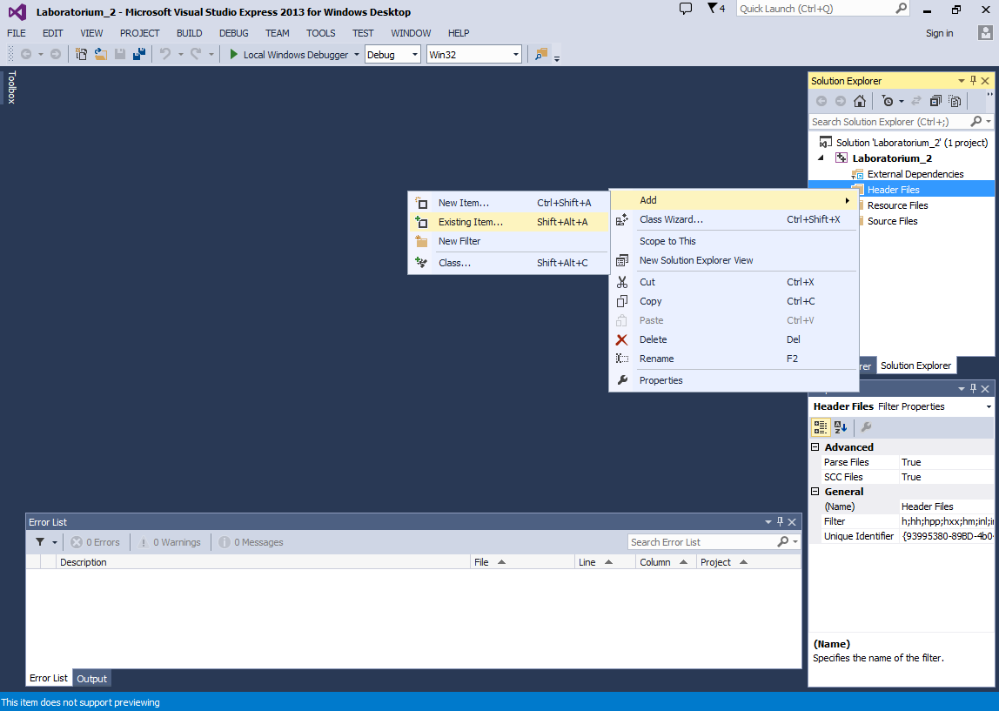
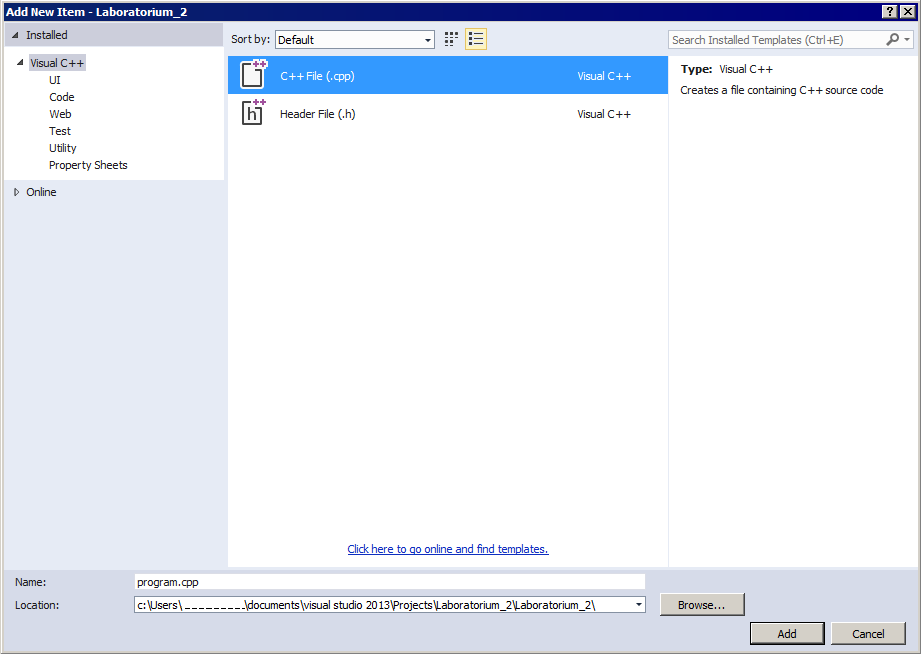
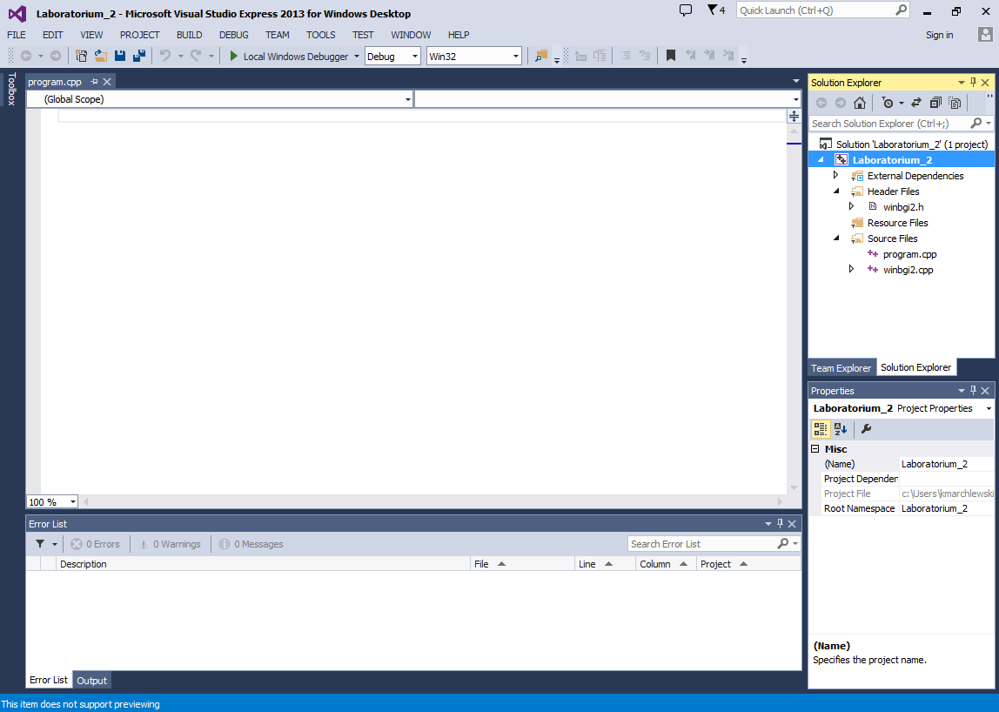
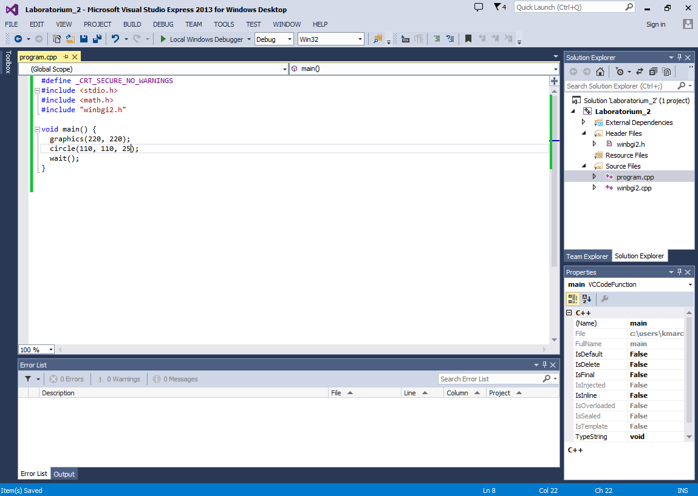
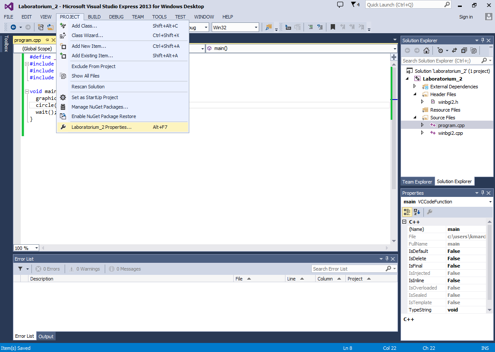
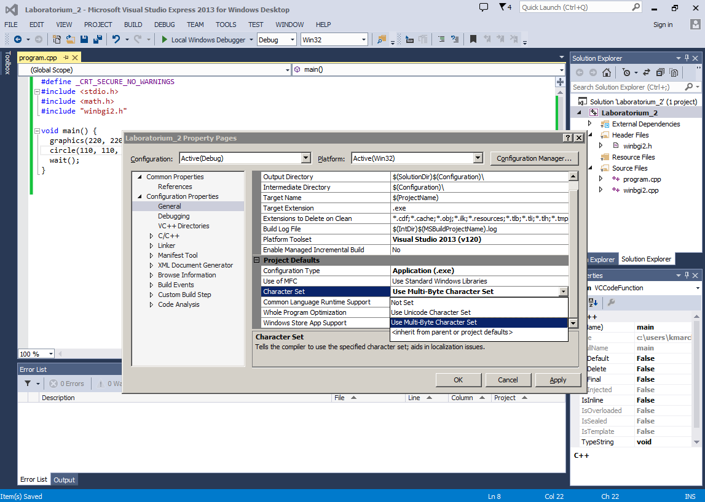
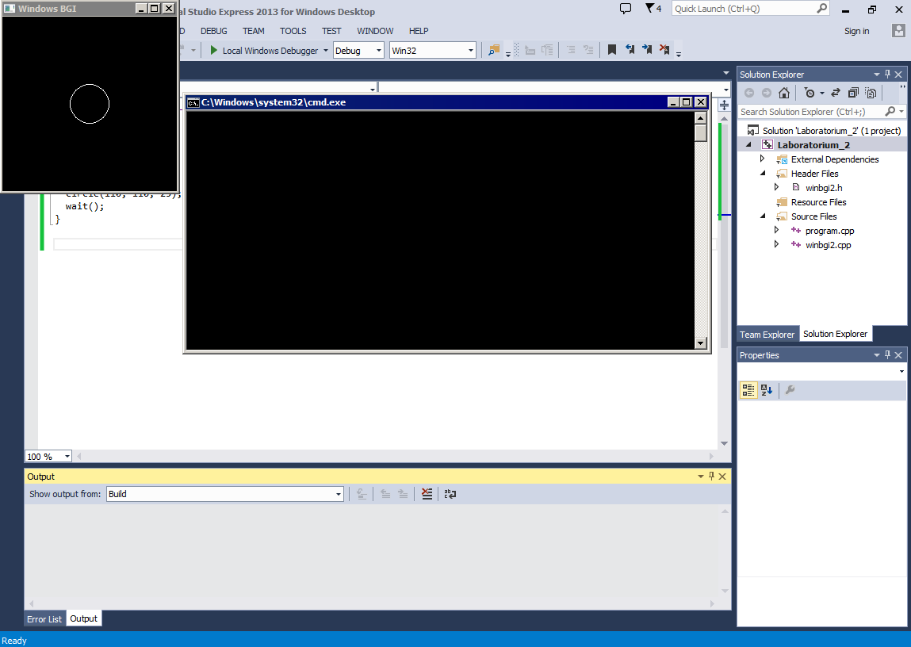

Tworzenie nowego projektu w programie Microsoft Visual Studio 2013
Instrukcja opisuje w jaki sposób stworzyć projekt wykorzystujący bibliotekę winbgi2 w programie Microsoft Visual Studio 2013.
- Otwórz program Microsoft Visual Studio.
- Na stronie startowej, pod nagłówkiem Start znajduje się link New project. Uruchom go. (Jeśli strona startowa nie wyświetli się, wybierz z menu głównego File -> New Project.)
- Rozwiń listę Templates i wybierz szablon Visual C++. W głównej części ekranu pojawią się cztery typy projektów. Wybierz Win32 Console Application
- Uzupełnij pole Name wybraną nazwą projektu i pole Location ścieżką do swojego katalogu. Okno New Project powinno wyglądać tak, jak poniżej:

- Kliknij OK, a w kolejnym oknie Next >. Wyświetlone zostanie okno Application Settings, w którym:
- Na liście Application type sprawdź czy zaznaczona jest opcja Console application.
- Na liście Additional options zaznacz opcję Empty project i odznacz opcję Security Development (…). Okno programu powinno wyglądać tak, jak poniżej:

Kliknij Finish. W katalogu, który wybrałeś jako miejsce dla utworzenia projektu, powstał folder o wybranej przez Ciebie nazwie. Otwórz go za pomocą eksploratora Windows. Znajdują się w nim pewne pliki (które w tym momencie nas nie interesują) oraz katalog o nazwie takiej samej jak nazwa katalogu nadrzędnego. Otwórz go. Znajdujesz się teraz w katalogu projektu, który zawiera tylko dwa pliki *.wcxproj i *.wcxproj.filters.
Pliki biblioteki graficznej można pobrać ze strony. Rozpakuj archiwum i wybierz pliki winbgi2.cpp oraz winbgi2.h. Skopiuj je do katalogu projektu.
Katalog powinien wyglądać następująco:

- Wróć do programu Microsoft Visual Studio i zarejestruj pliki biblioteki graficznej. W tym celu znajdź panel Solution Explorer. (Jeśli panel jest zamknięty, użyj kombinacji klawiszy
Ctrl+Alt+L.) Panel zawiera on pliki należące do Twojego projektu. Kliknij na Header Files, wybierz Add a następnie Existing Item.

- Otworzy się okno eksploratora, w którym należy wybrać plik nagłówkowy winbgi2.h.

Wykonaj tą samą procedurę dla pliku źródłowego. Tym razem kliknij na Source Files i wybierz dodawanie nowego pliku. Po otwarciu eksploratora wskaż winbgi2.cpp.
Ostatnim krokiem będzie dodanie pliku źródłowego, w którym będzie znajdował się kod naszego programu. Kliknij na Source Files, wybierz Add i New Item. Otworzy się okno wyboru typu pliku, w którym należy wskazać C++ File (.cpp). W polu Name wpisz wybraną nazwę (przykładowo program.cpp) i kliknij Add.

- Ostatecznie, okno projektu powinno wyglądać następująco:

- Jeśli nowy plik źródłowy nie otworzył się od razu, kliknij jego nazwę (w naszym przykładzie program.cpp) na karcie Solution Explorer. Wpisz przykładowy kod:

Instrukcje oznaczają odpowiednio:
#define _CRT_SECURE_NO_WARNINGS // Wylaczenie ostrzezen dotyczacych funkcji
// scanf(), printf(), itd.
#include <stdio.h> // Dolaczenie biblioteki z funkcjami wejscia/wyjscia
#include <math.h> // Dolaczenie biblioteki z funkcjami matematycznymi
#include "winbgi2.h" // Dolaczenie biblioteki graficznej
void main() {
graphics(220, 220); // Otworzenie okna do rysowania
circle(110, 110, 25); // Narysowanie kolka
wait(); // Oczekiwanie z zamknieciem okna do momentu gdy
// uzytkownik nacisnie dowolny klawisz
}- Biblioteka graficzna wymaga zmiany jednego ze standardowych ustawień. W tym celu klikamy na menu PROJECT a następnie na Nazwa Projektu Properties.

- W nowo otwartym oknie rozwijamy listę Configuration Properties, wybieramy opcję General, klikamy w prostokąt obok pola Character Set – pojawi się strzałka symbolizująca listę, rozwijamy ją i wybieramy opcję Use Multi-Byte Character Set. Wybór zatwierdź klikając OK.

- Program jest gotowy do skompilowania i uruchomienia. Robimy to przez kliknięcie klawiszy
Ctrl+F5lub przez rozwinięcie menu DEBUG i kliknięcie Start Without Debbuging. Po kompilacji program automatycznie się uruchomi:
